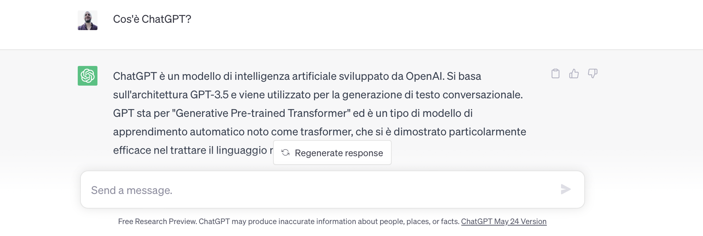

Generativ AI, eller generativ artificiell intelligens, hänvisar till ett område inom artificiell intelligens som fokuserar på att skapa originalinnehåll som bilder, musik, text eller till och med video med hjälp av ett autonomt system. Med andra ord är generativ AI att lära en dator att vara kreativ.

Generativ AI
Generativ AI fungerar genom att analysera en stor mängd insamlade data som bilder eller befintliga texter för att lära sig mönster och egenskaper i den informationen. När generativ AI-modellen har lärt sig från dessa data kan den använda denna kunskap för att generera nytt innehåll baserat på de inlärda mönstren och reglerna.GPT Modeller
I GPT-modellerna (Generative Pre-trained Transformer) är en serie av artificiell intelligensmodeller utvecklade av OpenAI. Funktionen hos GPT bygger på transformer-arkitekturen, en typ av neural nätverk som använder sig av uppmärksamhet för att fånga relationerna mellan orden i en text.
ChatGPT
ChatGPT är en artificiell intelligensmodell baserad på GPT-3.5-arkitekturen och används för att generera konversationstexter. Den har visat sig vara särskilt effektiv när det gäller att hantera naturligt språk.  Målet för ChatGPT är att svara på ett sammanhängande och relevant sätt på användares frågor. Det är dock viktigt att notera att den inte har förmågan att förstå världen eller ha verkliga erfarenheter. Dess svar baseras på informationen som den har tränats på och kan därför vara begränsade eller föråldrade.

DALL-E
Generativ AI för bilder gör det möjligt att generera eller modifiera bilder baserat på textbeskrivningar. Kända modeller för detta ändamål är DALL-E och Stable Diffusion.Den här prompten har genererat bilden bredvid: an astronaut lounging in a tropical resort in space in a vaporwave style.